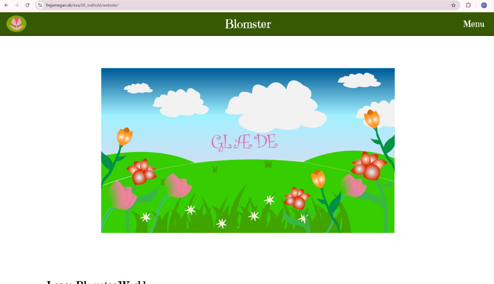
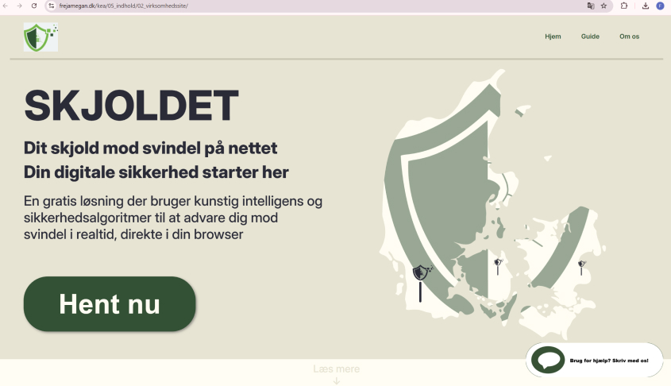
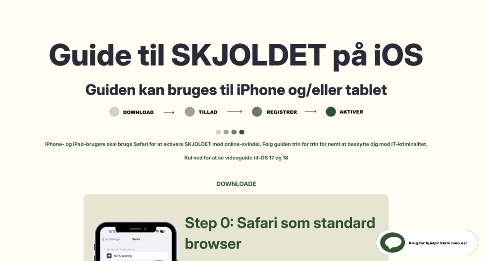

Tema 1 - Grundlæggende Indhold
I dette tema arbejdede jeg med hele processen i indholdsproduktion: planlægning, optagelse og redigering. Jeg optog videoer med smartphone og ekstern lyd, redigerede dem i Premiere Pro og Audition, og skabte animeret vektorgrafik med LottieFiles. Opgaven gav mig indsigt i grundlæggende principper for digital medieproduktion og styrkede mine evner inden for design og optimering af brugergrænseflader. Derudover arbejdede jeg med at genanvende tidligere lærte færdigheder til at redesigne en virksomhedshjemmeside. Fokus var på praksisnær teknologi og bæredygtige løsninger med hensyn til accessibility og etik.
Passionsite
Løsning
Det færdige website formidlede blomsterhandlerens visuelle identitet gennem en kombination af levende billeder, billeder og animationer. Videoen fangede stemningen i butikken, mens de animerede elementer gav sitet et frisk og farverig stil, der kommunikerer glæde og liv, hvilket passer godt til en blomsterhandler. Med en balanceret farvepalet og et enkelt layout blev resultatet et responsivt og visuelt indbydende website, der præsenterede blomsterhandlerens brand professionelt.
Process
I denne opgave arbejdede jeg med hele processen fra idé til færdigt website. Jeg besøgte en blomsterhandler for at optage videoer og tage billeder, som jeg efterfølgende redigerede i Premiere Pro og Audition. Jeg designede animeret vektorgrafik med LottieFiles og integrerede det på websitet.
Designprocessen omfattede udvikling af moodboards, farvehjul, logo, style tiles, wireframes, layoutdiagrammer og prototyper. Resultatet var et visuelt og funktionelt website, der kombinerede video, billeder og animation for at fremhæve blomsterhandlerens brand på en engagerende måde.
Virksomhedssite
Løsning
signede SKJOLDET.dk med et fokus på at skabe en intuitiv og moderne hjemmeside. Den nye struktur og optimerede navigation gjorde det lettere for brugerne at finde information, mens et opdateret visuelt design styrkede brandidentiteten. Vi implementerede en responsiv løsning, der fungerede på både desktop og mobile enheder, og brugte feedback fra likert tests til at sikre en brugervenlig oplevelse. Resultatet var en funktionel og æstetisk hjemmeside, der opfyldte både brugerens og virksomhedens behov, men dog med nogle små fejl rundt omkring, da det var en gruppeopgave.
Process
I denne gruppeopgave redesignede vi SKJOLDET.dk med fokus på at forbedre brugervenligheden og det visuelle design. Processen startede med research og analyse af den eksisterende hjemmeside, efterfulgt af udarbejdelse af user stories og værdiord.
Vi udviklede moodboards, style tiles, wireframes og layoutdiagrammer og testede vores design gennem likert tests. Samarbejdet i gruppen var centralt for opgaven, og vi arbejdede tæt sammen for at sikre, at resultatet levede op til både brugerens og virksomhedens behov. Billedet nedenfor viser den specifikke side, som jeg selv har lavet.
Læring
I begge opgaver var gruppearbejde det centrale element, og det blev hurtigt tydeligt, at samarbejdet var både udfordrende og læringsrigt. Jeg lærte at arbejde tæt sammen med andre for at finde fælles løsninger og sikre, at vi alle bidrog til den endelige opgave. Denne samarbejdsproces var en værdifuld læring i sig selv, da det krævede god kommunikation og fleksibilitet.
Derudover fik jeg også erfaring med at arbejde med Lottie-filer, hvilket var en ny færdighed, jeg tilegnede mig undervejs. Det har udvidet mine tekniske færdigheder og givet mig en dybere forståelse af, hvordan animationer kan integreres i webdesign for at skabe en mere interaktiv og dynamisk brugeroplevelse.